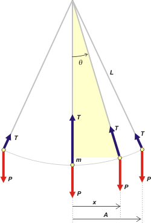
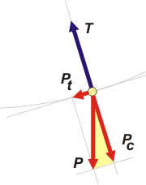

NO ME SALEN
PROBLEMAS RESUELTOS DE FÍSICA DEL CBC
(Gravitación)
|
|

|
| |
FIS 6.06 - Un péndulo simple de longitud L oscila con amplitud A. Expresar, como función del
tiempo, (a) su desplazamiento angular, (b) su velocidad angular, (c) su aceleración angular, (d) su
velocidad tangencial, (e) su aceleración centrípeta y (f) la tensión que ejerce la cuerda si la masa de
la lenteja es m.
|
Péndulo simple: el movimiento de la masa que cuelga describe un arco de circunferencia... y acá agregamos, con oscilaciones pequeñas, digamos, menores de 5 grados para cada lado, después te cuento por qué.
Arranquemos con unos esquemas en los que aparecen las principales variables de las que vamos a hablar. |
|
|
|  |
Aquí tenés lo básico, una masa m, colgando de un punto fijo mediante un piolín inextensible de longitud L.
En todo momento las únicas fuerzas que actúan sobre la masa son: su propio peso, P, que es constante (en módulo y dirección) y la fuerza que hace el piolón, T, que no solo va variando su dirección sino también su módulo. Es mayor que el peso en la posición más baja y menor que el peso en la posición extrema.
Estas cuestiones ya las discutimos varias veces en ejercicios anteriores, acá y acá y en otro más. La novedad va a aparecer en que vamos a tratar de describir las posiciones, tanto el apartamiento angular, α, como el apartamiento lateral, x. Y por supuesto, si tenemos eso también tenemos las velocidades y aceleraciones.
Al apartamiento lateral máximo lo llamamos amplitud, A. Fijate que todo lo medimos a partir de la vertical. |
|
|
|
Aunque en los casos que ya estudiamos lo hicimos sobre péndulos cónicos, tiene muchos aspectos idéntico, por ejemplo, que el período de oscilación se calcula de la misma manera:
T² = 2 π L / g
Con lo que:
ω² = g / L
Que además era independiente de la masa y de la amplitud.
Y otra relación importantísima que tenemos que destacar es que el apartamiento (mirá el triangulito rectángulo sombreado), x, lo podemos expresar como:
x = L sen θ
Vamos a poner la lupa en un punto intermedio del movimiento del péndulo para estudiar con más detalle las variables de interés: |
|
|
|  |
Descompuse la fuerza peso en dos direcciones, una tangencial a la trayectoria, Pt, y otra centrípeta, Pc. Si mirás el triangulito sombreado acordarás conmigo que:
Pc = P cos θ
Pt = P sen θ
Por otro lado, la dinámica nos asegura que:
T − Pc = m ac
Pt = m at
|
|
|
|
Donde ac y at son las aceleraciones tangencial y centrípeta respectivamente. Y según lo que aprendimos en movimientos circulares, la aceleración centrípeta se podía expresar como:
ac = v² / L
Si metemos eso en la anterior de aceleración centrípeta, nos queda:
T = m ( g cos θ + v²/L)
Lo que demuestra claramente que la tensión aumenta con la velocidad, tiene un mínimo cuando el péndulo alcanza su amplitud y un máximo cuando cuando el péndulo pasa por la posición vertical.
La ecuación de Newton (dirección tangencial) permite vincular el apartamiento angular, θ, con la aceleración angular, α.
Pt = m at
P sen θ = m α L
m g sen θ = m α L
g sen θ = α L
g sen θ − α L = 0 (ecuación de movimiento angular)
Lo que recibe el nombre de ecuación de movimiento. Y de ella se deduce una expresión equivalente para las posiciones y aceleraciones laterales (aunque para eso es necesario aproximar el desplazamiento lateral al desplazamiento medido sobre la trayectoria, por ello sólo es aceptable para oscilaciones pequeñas). at ≈ ax.
(g/L) x − at = 0
(g/L) x − ax = 0 (ecuación de movimiento lateral)
Ambas se resuelven operando con ecuaciones diferenciales lo que excede el nivel del curso de No me salen, por lo que simplemente vamos a mostrar los resultados que no son otros que los que pide nuestro enunciado. Y que son los que ya te esperás: |
|
|
| |
θ = θA cos ( ω t + φ)
w = − ω θA sen ( ω t + φ)
α = − ω² θA cos ( ω t + φ) |
|
|
|
|
|
Donde w es la velocidad angular del cuerpo; ω es la velocidad angular (constante) del movimiento circular asociado y es igual a (g/L)½; θA es el ángulo de apartamiento máximo (θA = A/L) ; y φ es el ángulo de fase inicial.
Ahora las de desplazamiento lateral, que ya las conocés. |
|
|
| |
x = A cos ( ω t + φ)
v = − ω A sen ( ω t + φ)
ax = at = − ω² A cos ( ω t + φ) |
|
|
|
|
|
|
|
|
| |
|
 |
| DESAFIO: |
|
| Algunos derechos reservados con anticipación.
Se permite su reproducción citando la fuente. Última actualización abr-16. Buenos Aires, Argentina. |
|
|
|